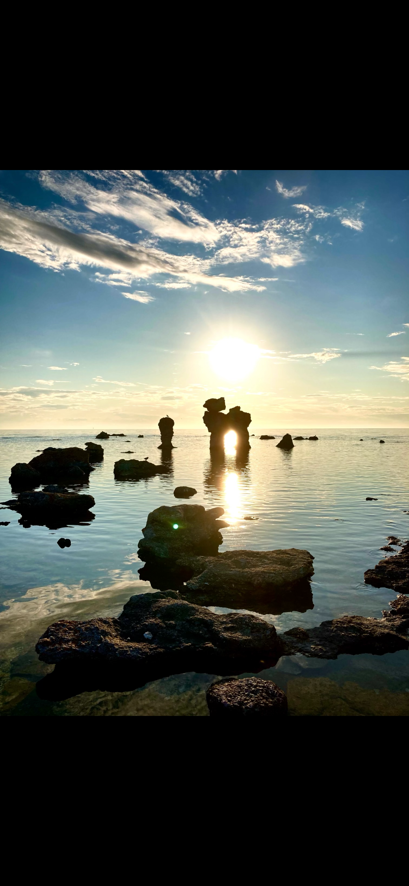
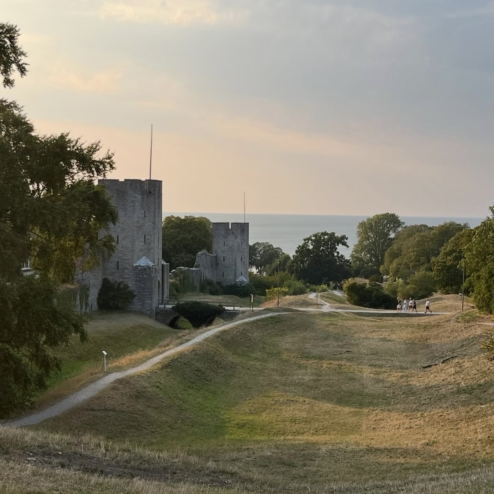
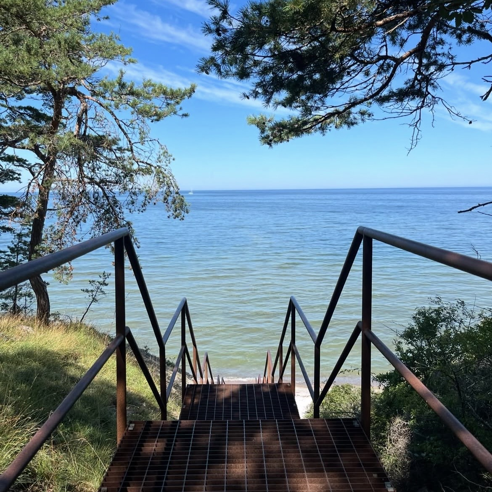
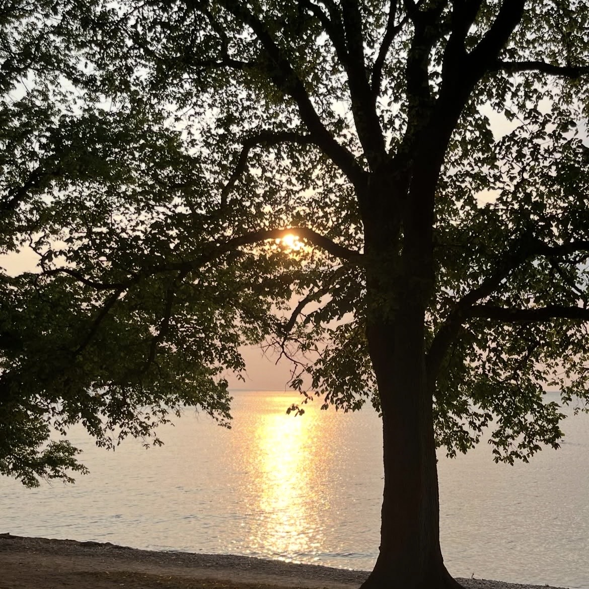
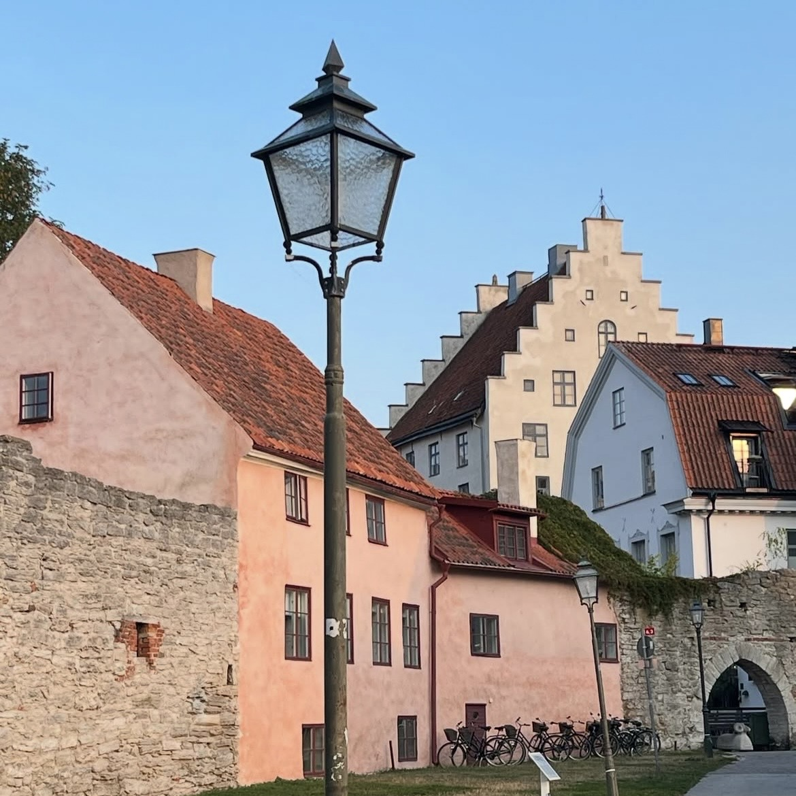
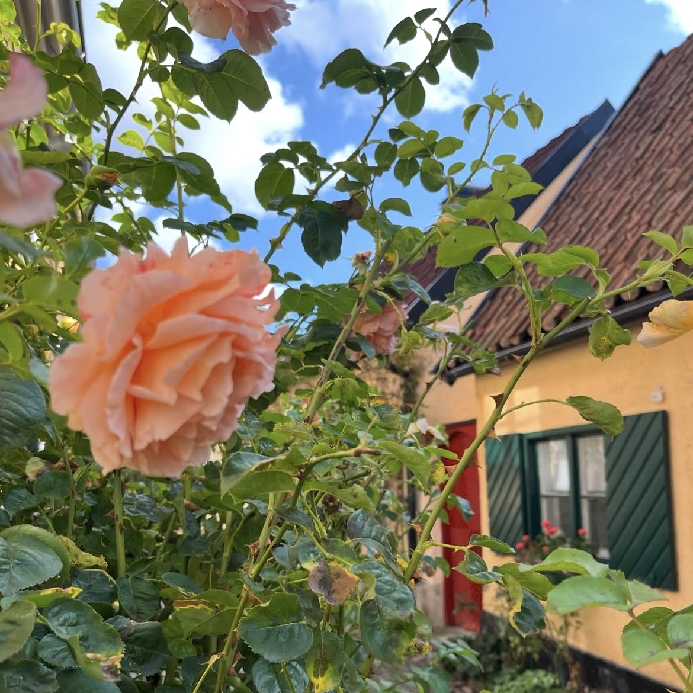

Från Visby tar det lite mer än en timme att åka till Fårö inklusive den korta färjeturen. Det är en liten ö bredvid Gotland med magisk natur,
här kan du äta god mat på olika resturanger, bada på mysiga stränder, gå på vandring och upptäcka de häftiga raukarna.
Mysigt promenadstråk med maffiga hällar och fin skogsnatur. Här kan du stanna och grilla eller äta något gott vid grillplatserna med havsutsikt, här har jag
firat Valborg och avnjutit många Millelire pizzor.
En obligatorisk aktivitet är att gå runt ringmuren, upptäck muren som har stått på Gotland sedan 750 år tillbaka. Innerstan är väldigt häftig med hus som stått
där sedan medeltiden. Här finns det lokala butiker och mysiga fik att kika in i. På sommaren finns det massor av fina rosor att kika på!





